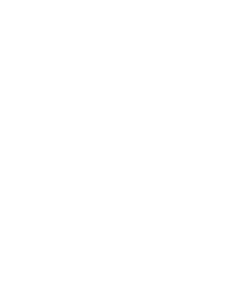

Je čas na změnu. Rajhradice si zaslouží vedení, které pracuje efektivně, otevřeně a s jasnou vizí. Nechceme jen pokračovat ve starých kolejích – chceme naši obec posunout dál.
Prvních pět jmen z naší kandidátky. Klikněte na kohokoli a podívejte se na jeho medailonek – nebo si projděte všech patnáct.
Nemáme sliby na plakát. Máme konkrétní připomínky, nápady a k nim varianty řešení – s tím, že o konečné podobě chceme mluvit s vámi.

Každé téma projdeme na místě, na kameru, se schématem. Čtyři nejnovější videa z našeho YouTube – všechna témata najdete v archivu.
Drhne něco ve vaší ulici? Máte lepší variantu, než navrhujeme? Přesně to chceme slyšet. Napište, nebo rovnou zavolejte.
Zavolejte732 760 085 Napištealternativaprorajhradice@gmail.com